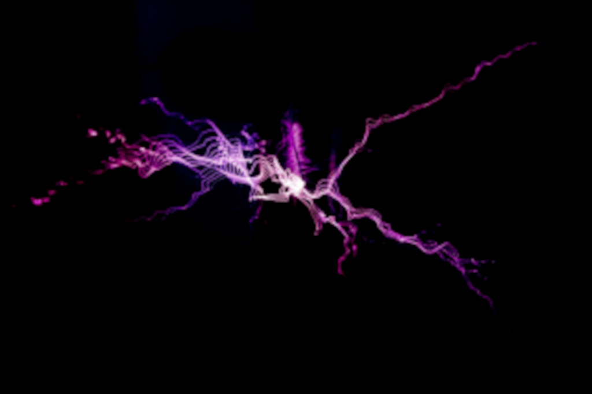
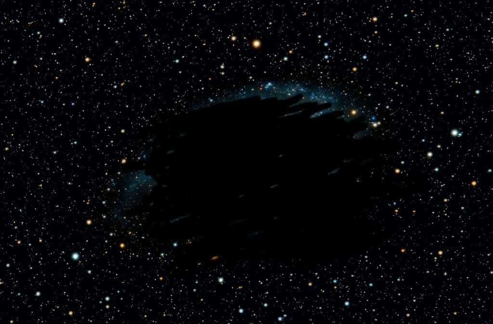
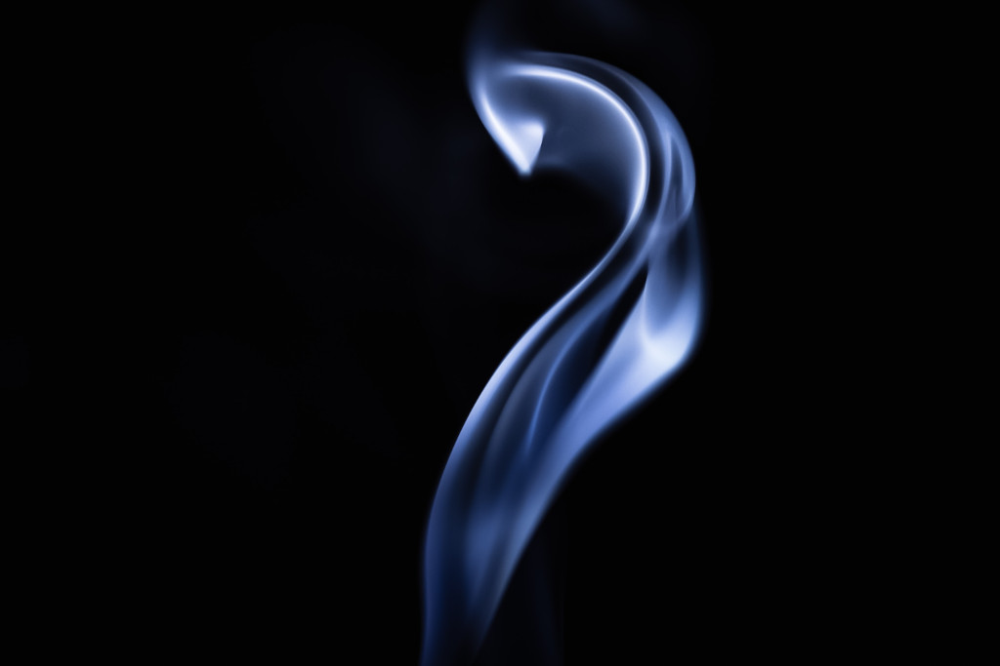
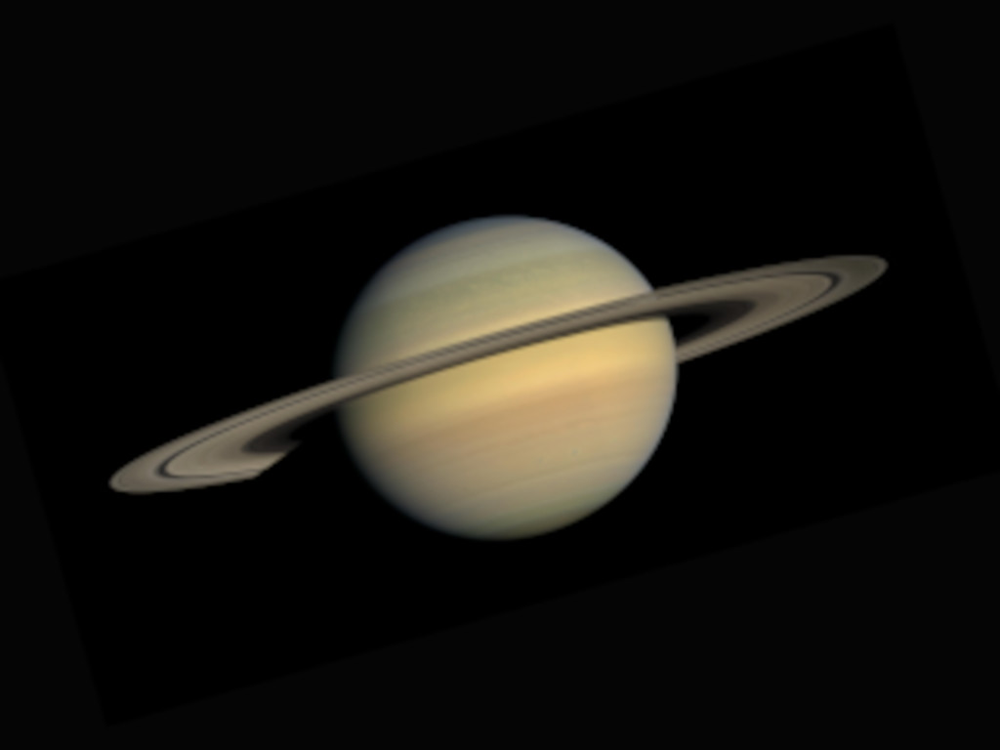
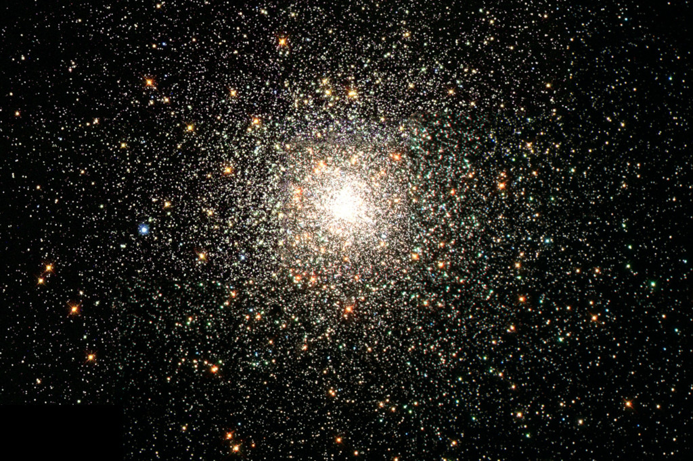

We weten steeds meer over het heelal. Maar er zijn ook nog een aantal raadsels waar we als mensheid nog geen verklaring voor kunnen vinden.
Op deze pagina, worden deze raadsels besproken. Ook wordt er gekeken naar eventuele theorieën die betrekking hebben op deze raadsels.
Donkere materie
Donkere materie is de naam welke onderzoekers gegeven hebben aan materie die niet te zien is maar wel effect heeft
op zwaartekracht. Donkere materie heeft massa. Het kan dus worden waargenomen door verstoringen in de zwaartekracht. Deze theorie
wordt onderbouwd doordat er op basis van baansnelheden naar de totale massa van een cluster gekeken kan worden. Volgens
de berekeningen zijn deze clusters veel zwaarder dan de afzonderlijke sterrenstelsels die het cluster vormen. Er moet dus
heel veel massa zijn die niet te zien is. Wij zien dingen omdat de atomen waaruit het is opgebouwd elektronen wolken rondom
hun kern hebben. Deze zorgen voor het opnemen van energie in de vorm van licht. Door verval van deze energie wordt er een
signaal uitgezonden welke ons oog bereikt. Donkere materie lijkt dus uit alleen kernen te bestaan (en kan daarom
niet worden waargenomen) maar dat kan ook niet omdat de atomen positief geladen zouden zijn bij de afwezigheid van elektronen en dus
zouden ze elkaar moeten afstoten. Volgens de berekeningen bestaat het heelal voor 68% uit donkere energie, 27% donkere materie en
slechts voor 5% uit materie zoals wij die kennen.
Donkere energie

Het heelal is vanaf de oerknal aan het uitzetten. Door de zwaartekracht zou deze snelheid moeten afnemen. Nu blijkt uit berekeningen dat de snelheid
van het uitzetten groter wordt. Er moet dus energie zijn, anders dan de oerknal, die ervoor zorgt dat het heelal steeds sneller groter wordt. Deze energie wordt
donkere energie genoemd. Net als bij donkere materie weten we nog niet veel van deze energie behalve dan dat deze wel moet bestaan volgens de theorieën die
we nu hebben. Samen met donkere materie is dit één van de grootste raadsels die we nog niet hebben opgelost.
De grote leegte

In het heelal bevindt zich een gebied waar helemaal niks is. Geen materie maar ook geen donkere materie. Een verschil met een zwart gat is dat er in deze ruimte gewoon licht
kan passeren. Wetenschappers denken dat er wel donkere energie aanwezig moet zijn. Er zijn meerdere van deze gaten in het heelal maar de grootste is 1,3 biljoen lichtjaren groot.
De grote aantrekker

Sinds de oerknal zet het heelal uit. Je zult dus verwachten dat ons sterrenstelsel een bepaalde kant opgaat. Maar ons sterrenstelsel raast een andere kant op met 2 miljoen km/h. Het punt waar we naartoe racen wordt de grote aantrekker genoemd. Het feit dat dit punt zo licht is komt door zijn enorme
aantrekkingskracht. Dit punt bevindt zich op 220 miljoen lichtjaar vanaf de aarde. Sommige wetenschappers wijten de aantrekkingskracht aan zwarte materie.
Peggy

In 2013 spotte NASA een kleine verstoring in de ringen van Saturnus. NASA dacht dat het een kleine maan in ontwikkeling was omdat het object ook groeide. Het object kreeg
de naam Peggy. Later bleek dat het object niet verder groeide en zelfs in verval te zijn. De huidige status van Peggy is onbekend.
Zwart gaten
Zwarte gaten ontstaan als erg grote sterren opbranden. Een zwart gat heeft enorm veel zwaartekracht en zuigt alles naar binnen wat in zijn buurt komt, zelfs licht. Daarom is het dus onmogelijk om een zwart gat te zien.
We kunnen alleen maar gokken hoe een zwart gat er van binnen uitziet en misschien nog wel belangrijker: wat zit er aan de andere kant?
Tabby's ster

1500 Lichtjaar vanaf de aarde bevindt zich een ster waarvan het licht dat het uitzendt voor 20% geblokkeerd wordt. Het kan bijna geen planeet zijn want een planeet met de grootte van Jupiter zou het licht voor slechts 1% blokkeren. Sommige wetenschappers denken dat het object dat de ster blokkeert een Dyson Swarm is, een iets minder complete versie van een
Dyson sphere. Dit is een megastructuur die een deel van de energie die een ster uitzendt opvangt. Anderen denken dat ons sterrenstelsel hetgeen blokkeert wat ons aantrekt.